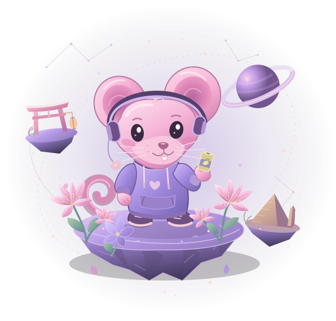

UN GIOCO FATTO PER TE
Nasty little
universe.
Un ratto rosa, quattro gigli da ritrovare.
Un piccolo viaggio fatto per te.

Quattro piccoli mondi.
Due varchi. Un giglio da recuperare.
00/2 VARCHI
Doppio
salto
salto
Tutto questo caos.
Un posto per noi.
Tocca i quattro gigli per comporre il bouquet.